🝰 dusk is a deniable cloud drive
Installer User Guidecurl -o- https://rundusk.org/install.sh | bash Trustless file storage, secure sharing, and programmable alerts.
Trustless file storage, secure sharing, and programmable alerts.
 No server to hack, database to seize, or company to subpoena.
No server to hack, database to seize, or company to subpoena.
 End-to-end privacy, anonymity, and censorship resistance.
End-to-end privacy, anonymity, and censorship resistance.
Is 🝰 dusk for you?
If you are an activist, journalist, or researcher that handles sensitive files, dusk is designed to keep you and your friends safe.
Your files are encrypted, shredded into uniform blocks, encoded with recovery information, and spread across a network of Tor hidden services. Files can only be retraced with an encrypted pointer that you keep and secret key that only you can unlock. If you work in a high-risk environment under threat of physical device seizure, dusk can help protect your data and shield your personal networks.
Features
FTP Bridge
Manage files through a familiar interface using any FTP client. Access your data remotely using built-in Tor onion services.

Command Line Interface
Command line for power users to connect your network, encrypt, shred, store, retrace your files, and build applications on dusk.
GNOME Desktop Integration
Simple desktop menu to manage settings, link other devices, and use a graphical wizard for creating USB sneakernets completely offline.
Offline Mode
dusk's SNEAKR (Shred, eNcrypt, Encode, And Kademlia Retrace) protocol works without a network or internet connection. Create USB sneakernets with your crew - make files only unlockable if a critical mass of your team is physically present.
If someone is compromised, data is still safe from adversaries and recoverable by uncompromised members.
anti-copyright, 2024 tactical chihuahua
licensed agpl 3 | source
🝰 dusk is proudly antifascist